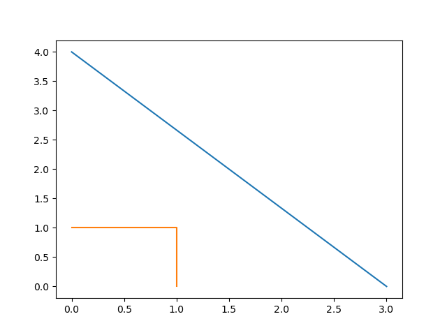

Part 1: Basic types
All the tutorials assume Fields2Cover library is included as:
import fields2cover as f2c
Initialize a Point
Points are the most basic type. There are many ways to initialize a Point (f2c.Point)
With x and y axis on the constructor
p1 = f2c.Point(1.2, 3.4) print("Point 1: ", p1)
Point 1: Point(1.2, 3.4, 0)
With x, y and z axis on the constructor
p2 = f2c.Point(9.8, 7.6, 5.4); print("Point 2: ", p2);
Point 2: Point(9.8, 7.6, 5.4)
Using
OGRPointfrom GDALfrom osgeo import ogr ogrpoint = ogr.Geometry(ogr.wkbPoint) ogrpoint.AddPoint(11, 22) p3 = f2c.Point() p3.importFromWkt(ogrpoint.ExportToWkt()) print("Point 3: ", p3)
Point 3: Point(11, 22, 0)
Creating an empty
Pointand setting its components usingsetX/setY/setZ. The components can be also read withgetX/getY/getZ.p4 = f2c.Point() p4.setX(3.0); p4.setZ(-1.0); print("Point 4: ", p4, ". Its components are: {x: ", p4.getX(), ", y: ", p4.getY(), ", z: ", p4.getZ(), "}")
Point 4: Point(3, 0, -1). Its components are: {x: 3, y: 0, z: -1}
Creating an empty
Pointand importing its components.p5 = f2c.Point() p5.importFromWkt("POINT (0 4 4)") print("Point 5: ", p5)
Point 5: Point(0, 4, 4)
Initialize a LineString
A LineString (f2c.LineString) represents a line. The ways to initialize a LineString are:
Creating an empty
LineStringand adding severalPoint:line1 = f2c.LineString() line1.addPoint(3,0) line1.addPoint(p5) print("Length of line 1: ", line1.getLength())
Length of line 1: 5
Creating an empty
LineStringand adding severalPoint:line2 = f2c.LineString(); [line2.addPoint(p) for p in [f2c.Point(1, 0), f2c.Point(1, 1), f2c.Point(0, 1)]]; print("Length of line 2: ", line2.getLength());
Length of line 2: 2
Initialize a LinearRing
A LinearRing (f2c.LinearRing) is a closed LineString.
It can be initialized as a LineString:
ring = f2c.LinearRing(); [ring.addPoint(p) for p in [f2c.Point(1,1), f2c.Point(1,2), f2c.Point(2,2), f2c.Point(1,1)]]; print("Area of the ring: ", ring.getArea())Area of the ring: 0.5
The main difference between LineString and LinearRing is that LinearRing is expected to be closed, so the area can be computed.
Initializing other collections
A MultiLineString (f2c.MultiLineString) are several LineString. It can be initialize as:
lines = f2c.MultiLineString();
lines.addGeometry(line1);
lines.addGeometry(line2);
print("Lines have length: ", end="")
for i in range(lines.size()):
print(lines.getGeometry(i).getLength(), end = ", ")
print("\n")
Lines have length: 5, 2,
A Cell (f2c.Cell) is a polygon created by one outter LinearRing and zero, one or many inner LinearRing.
First LinearRing has to be the outter one.
LinearRing should not cross each others.
outter_ring = f2c.LinearRing();
[outter_ring.addGeometry(p) for p in [ \
f2c.Point(0, 0), f2c.Point(2, 0), f2c.Point(2, 2), f2c.Point(0, 2), f2c.Point(0, 0)]];
inner_ring = f2c.LinearRing();
[inner_ring.addGeometry(p) for p in [ \
f2c.Point(0.5, 0.5), f2c.Point(1.5, 0.5), f2c.Point(1.5, 1.5), \
f2c.Point(0.5, 1.5), f2c.Point(0.5, 0.5)]];
cell = f2c.Cell();
cell.addRing(outter_ring);
cell.addRing(inner_ring);
print("The area of the cell is: ", cell.getArea(), "\n");
The area of the cell is: 3
A Cells (f2c.Cells) is a multipolygon. It contains zero, one or several Cell on it.
cells = f2c.Cells();
cells.addGeometry(cell);
print("The area of the cells is: ", cells.getArea(), "\n\n")
The area of the cells is: 3
Lastly, MultiPoint (f2c.MultiPoint) is a collection of Point
points = f2c.MultiPoint();
[points.addGeometry(p) for p in [f2c.Point(1, 2), f2c.Point(3, 4)]];
print("Points contains ", points.size(), " points.");
points.addPoint(5, 6);
print("Points contains ", points.size(), " points.");
points.addPoint(p5);
print("Points contains ", points.size(), " points.");
Accessing elements in collections
To access each of the elements in a collection, the function getGeometry(n) returns the element n.
p_0 = points.getGeometry(0);
print("First point in points: ", p_0, "\n")
First point in points: Point(1, 2, 0)
Unfortunately, if we change the child element, it is not changed on the collection.
If you want to keep it, you have to set the geometry back with setGeometry()
p_0 *= 1e5;
print("Modified p_0: ", p_0);
print("First point in points without modification: ", points.getGeometry(0));
points.setGeometry(0, p_0);
print("Modified first point in points: ", points.getGeometry(0));
This process can be done in any of the collection types presented previously:
LineString, LinearRing, MultiLineString, Cell, Cells and MultiPoint
Robot
The vehicle to cover the field is defined as a Robot struct.
To initialize it, the constructor needs the width of the robot and the width of the operation.
For example, if we have a vehicle to fertilize a field, with a width of 3 meters width and a fertilizer width of 39 meters, we should initialize it as:
robot = F2CRobot(3.0, 39.0);
Other important parameters of Robot are:
cruise_speed: is the speed of the vehicle when traveling through the field.
max_icc: is the maximum Instantaneous Center of Curvature on a turn. It’s the inverse of the radius. It’s preferable to use the function
setMinRadius(double).linear_curv_change: is the maximum change of curvature in a turn. It’s used to prevent instant changes of curvature.
max_vel: if not set, the velocity when turning is cruise_speed.
Swath, Swaths and SwathsByCells
A swath, or AB line, is the path that uses an agricultural vehicle to cross the field. On Precision Agriculture, swaths are fixed.
Swaths are coded in the Fields2Cover library as Swath.
A Swath is defined by a LineString, which defines the path of the swath, and the width of the swath.
Swaths is a collection of Swath. Swaths groups all the Swath on a Cell.
SwathsByCells collects the Swaths for each Cell.
Route and Path
Lastly, a Route defines a route, as a sequence of Swaths and MultiPoint.
The type of the Route points if there is an start and/or end point in the route.
If there are none, the Route will start with the first Swaths, then the first MultiPoint, then the second Swaths, and so on…
MultiPoint are employed to go from the end of one Swaths to the start of the next Swaths.
The MultiPoint could be empty.
A Route is not a path because it doesn’t have the turns or the velocities the vehicle has to have.
On the other hand, Path defines the point, angle, velocity and duration of each step.
With a Path, a vehicle knows exactly where, when and how should it be.
Warning
Route are not used in this version of Fields2Cover
Visualizing Fields2Cover data
To visualize Fields2Cover data, the library provides the class f2c::Visualizer to easily plot it.
First, you can define your figure id with:
f2c.Visualizer.figure(100);
The previous line could be omitted, and it will create one itself. Then, draw the data using that figure as:
f2c.Visualizer.plot(lines);
Lastly, the data can be plot as:
f2c.Visualizer.show();
or saved as:
f2c.Visualizer.save("Tutorial_image");
The result should be an image as:
